Reproducibility and robustness of economics and political science research
Abel Brodeur, Derek Mikola, Nikolai Cook, and 344 others (2026), "Reproducibility and robustness of economics and political science research." Nature 652(8108): 151-156. doi.org/10.1038/s41586-026-10251-x The text here is the accepted manuscript, before the publisher's copy-editing and typesetting; cite the version of record. It is the London School of Economics' deposit, made openly available under a Creative Commons Attribution licence, and the fullest version of this article that is openly available; the version of record is behind the publisher's paywall. Three things here follow the published article rather than the manuscript. The legends of Figures 1 to 4 are the published ones, because the manuscript's own legends print unresolved placeholders where the published legends name the panels. Numbered citations are set as superscripts, as the journal sets them. And Alexandre Fortier-Chouinard's surname is spelled correctly in the author list, which the manuscript misspells once and the journal corrected in Nature 653, E7.
Abel Brodeur et al. (Author list and contributions are provided in the SI)1
1Department of Economics and Institute for Replication, University of Ottawa, 75 Laurier Avenue East, Ottawa, K1N 6N5, Ontario, Canada.
Corresponding author(s). E-mail(s): abrodeur@uottawa.ca
Abstract
This systematic and large-scale reproduction effort tests the reproducibility and robustness of economics and political science, contributing to a growing literature on research credibility and self-correction in science1–4. We reproduced original analyses and conducted robustness checks of 110 articles recently published in leading economics and political science journals, all of which have mandatory data and code sharing policies17,18. We found that over 85% of published claims were computationally reproducible. In robustness checks, our re-analyses led to 72% of statistically significant estimates to remain significant and in the same direction, and the median reproduced effect size is (nearly) the same as the originally published effect size (that is, 99% of the published effect size). Additionally, six independent research teams examined 12 pre-specified hypotheses about determinants of robustness. Research teams with more experience found lower levels of robustness, and robustness correlated with neither author characteristics nor data availability.
1. Introduction
Science aspires to be cumulative. Reproducibility efforts strengthen science by testing the reliability of published findings, promoting self-correction, and informing policymaking1. Computational reproductions, whereby independent researchers reproduce the results of published studies, are an essential diagnostic tool2–10. Such efforts should have greater visibility11–16. However, there has been little social science reproduction and robustness conducted at scale10,13,17–23.
This project is a mega-reproduction led by the Institute for Replication (I4R), which evaluates the reproducibility and robustness of 110 published studies in economics (79) and political science (31). Our focus is on studies published in 12 prestigious journals between 2022 and 2023. While each of these journals has a data and code availability policy requiring authors to publicly share their materials upon publication, most (though not all) also appoint a dedicated data editor. This editor is responsible for enforcing the journal's data and code policy and conducting internal computational reproducibility checks for accepted studies (see Supplementary Materials 11.5).
Not all studies from our targeted journals were chosen for reproduction and robustness, and our sample is thus not a random representative sample of studies in economics and political science. Our approach leads to an over-representation of studies using publicly available data18. Another feature of our sample is that the targeted journals have a data availability policy and enforce it. This is in contrast to many top field journals in both economics and political science. Our sample should thus be viewed as very selective both in terms of impact and high data and code availability rates, and might present an optimistic upper bound on reproducibility rates. In fact, virtually all papers in our sample include replication packages with cleaned data and code to reproduce the paper's results, and about 30% also provide the raw data and cleaning code used to generate the analytical data (Extended Data Figure 1, Levels 8, 9, and 10).
While this project relates to the broader reproducibility movement in psychology, neuroscience, or biomedicine, it distinguishes itself from notable social science replication efforts along four key dimensions24–26. First, we are mostly reproducing (non-experimental) studies using the same data as the original authors. Second, we assess computational reproducibility and test the robustness of estimates to alternative specification choices. Because of the unique nature of the underlying studies—largely non-experimental work that uses observational data—we offer the first evidence about the general robustness of economics and political science. Third, we concentrate on recent studies for both economics and political science. Finally, this is an ongoing initiative that aims to expand across disciplines, with the goal of mass reproducing studies and reshaping research norms at scale. This paper reports findings from the first 110 reproductions.
2. Definitions
We follow 27's nomenclature and define a claim computationally reproducible if its results can be reproduced using the original study's data and protocols. A claim is robust if its results are robust to alternative reasonable analytical decisions on the same data. Last, a claim is replicable if its results can be repeated using new data.
3. Teams and Choice of Study
The reproductions and replications in this project are generated in one of two streams. First, I4R has a board of editors who recommend potential reproducers. Second, I4R held 11 events called replication games (Games)28. Games are one-day events open to faculty, post-docs, graduate students and other researchers. Participants are assigned to a small team of about 3-5 other researchers all working in the same subfield (e.g., development economics).
Participant teams are offered a short list of (average 5) studies in their subfield of interest about three weeks before the games. They are asked to choose a paper as a team, and familiarize themselves with the data and codes publicly posted by the original authors (i.e., replication package) prior to the games. After the Game, teams submit a standardized reproduction report summarizing their results.
I4R emphasizes to reproducers that the goal is not to show that the results are not reproducible. The goal is instead to test if the claims are reproducible and robust. This is key as some reproducers might engage in reverse specification searching (i.e., selective reporting of insignificant results). I4R stresses the importance of reasonable robustness checks and recoding29. Re-analyses are sensible tests of the research question and expected to be statistically valid and theoretically informed.
We survey the reasons why teams selected their paper (Extended Data Figure 2). While 13.6% of teams were assigned a study (i.e., did not choose which study to work on), about 45% of teams report "Methods used", 36% of teams selected "because of the journal of publication" and about 25% due to the "length of time to reproduce results".
If a large portion of reproducers select papers based on the assumption that their findings are questionable, it could skew reproducibility rates downward, as such studies might be more prone to revealing problematic outcomes. However, in this project, only a minimal fraction of teams indicated that they chose their paper because of ex ante beliefs that main results are (not) replicable (3.6%). We found that selecting a paper due to the reproducers' belief the paper is not robust is inversely correlated with reproducer experience ( = -0.19, p < 0.000). A few teams (5%) indicated that their choice was based on statistical power/sample size and trust of original authors.
4. Data and Computational Reproducibility
We find a computational reproducibility rate of 85%. That is, when provided with the original data and code, independent researchers are able to reproduce the published results in economics and political science studies 85% of the time using either: (1) the raw and analytical data, or; (2) the analytical data when the raw data were not provided. The remaining 15% of cases involved studies with only partial availability of code or data, or instances where code failed to run or produced inconsistent results (See Supplementary Materials 11.8 and Extended Data Figure 1). Fixing paths, missing packages and software requirements were not considered failures of computational reproducibility. In those instances, we fixed paths, added missing packaged and software requirements.
Our findings suggest high rates of computationally reproducible results, but far from perfect for leading journals. Our results are in contrast with several studies documenting low computational reproducibility rates in economics19,13,22. This may in part reflect the effectiveness of editorial policies in journals that have introduced data editors and mandatory sharing of replication packages.
To provide context to these findings, we mapped data and code availability in all of our target journals between 2014 and 2023. As discussed in Supplementary Materials 11.11, data and code sharing practices have dramatically improved during this period. We found replication folders are attached to 59% of papers in 2014, while replication folder provision increases to a seemingly stable value close to 90% in 2021-2023 (Extended Data Figures 3, 4, 5 and 6). Additionally, for journals that introduced data editors during this period, much of this improvement occurred during the first year following this change.
5. Robustness
For robustness, we directly compare original point estimates to the revised point estimates. This one-on-one comparison allows us to speak to the robustness of a specific hypothesis test, in addition to the robustness of our entire sample. We are thus looking at several claims within a study and conduct robustness reproducibility and robustness for multiple claims.
Reproducers are then free to conduct any robustness or recoding exercises. They focus on the reproducibility of the claims and have access to the replication package, allowing them to directly test the robustness of the main results. This is a crucial advantage over the traditional review process as reproducers may uncover coding errors and discrepancies between the paper and the codes. They may also uncover coding decisions that were not discussed (or are hard to find) in the article.
However, this flexibility also brings some disadvantages. As with the journal review process with reviewers, reproducers spend different amounts of time and effort on their respective replication. Some reproducers are more experienced at coding, while others are more familiar with methods, or simply unable to implement robustness checks due to a lack of raw data (Extended Data Figure 7). This means that reproducibility efforts and type of re-analysis vary across teams. Teams worked on average 13 active days (std. dev. of 24) on the reproductions and robustness, and reports were on average 19 pages long (std. dev. of 14).
Figure 1 (top of left panel) shows a robustness rate of 72%. This result means that when alternative analytical decisions were made on the same data, 72% of originally statistically significant estimates (p < 0.05) remained statistically significant (p < 0.05) in the original direction.
![Two panels of horizontal dot plots. Each row is a type of re-analysis, and each carries three markers with 95% confidence intervals: the full sample, the economics subsample and the political science subsample. The left panel covers originally statistically significant results, where the proportions run from about 0.45 for a changed dependent variable to about 0.87 for re-analyses that add new data; the right panel covers originally insignificant results, where they run from about 0.67 to about 0.97 and most sit above 0.8.](figures/fig1.png)
We find large differences by re-analysis type. The re-analysis type that has the highest robustness rate (78%) is changing the independent variable measure (examples include log transformations, discretization, etc.). The re-analysis type that has the lowest robustness rate (45%) is any which included changing the dependent variable measure (e.g., categorizing the variable or log-transforming). When a replication (addition of new data, e.g., from more recent survey waves or an alternative source) is applied, the replication rate is 87%.
The average robustness rate is 71% and 78% for economics and political science, respectively, where the 6.7% difference is statistically significant (two-sample difference in proportions z = -2.52, p = 0.012, n1 = 2368, n2 = 327). The general pattern of the robustness rates is similar between economics and political science (with the exception of dependent variable and inference method, which were not applied by any of the political science re-analyses). Focusing on robustness rates for originally statistically insignificant findings, we find a robustness rate of 89%.
Supplementary Materials Appendix Table 1 shows shifts in statistical significance between all significance regions. We find that 7.44% of re-analyses find an effect with the opposite sign as the original result. In contrast, of the 62.84% of original analyses that were statistically significant, most remained significant and of the same sign (44.33%/62.84% = 70.5%). Of particular note is the 15.06% of re-analyses that find a statistically insignificant result for originally statistically significant analyses.
We illustrate in Figure 2 the distribution of test statistics for the original point estimates and the re-analyses. We find that 53% of the originally published test statistics are statistically significant (to the right of the statistical significance threshold). In contrast, 43% of re-analyses are statistically significant (above the statistical significance threshold in the vertical axis histogram). The simple difference in proportions is statistically significant (difference of 10.4%, McNemar's = 264.11, p < 0.001, n = 4750).
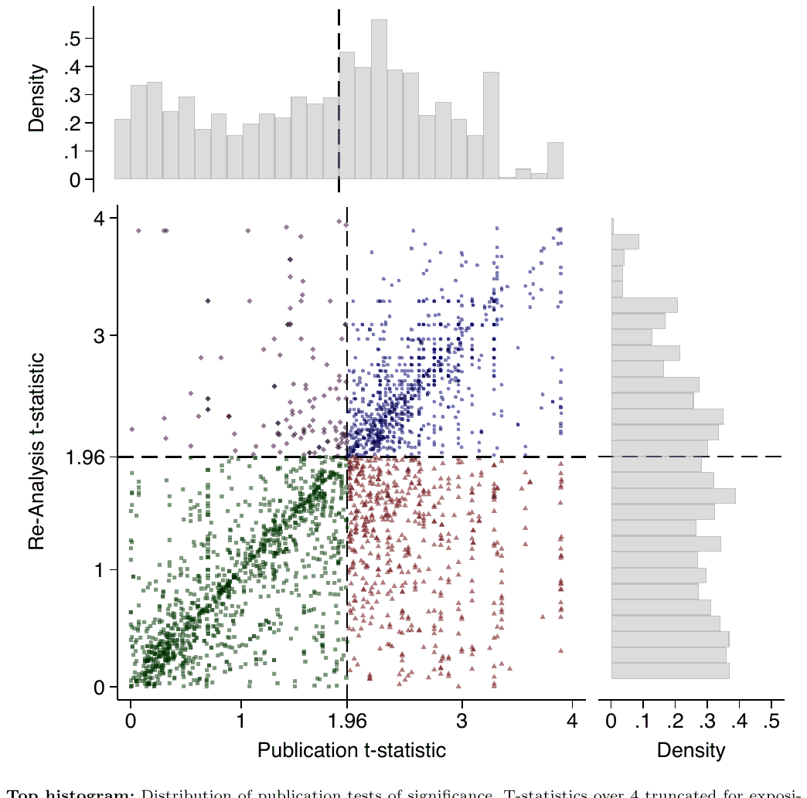
When expressed as t-statistics, the average originally published t-statistic is 1.797 whereas the average re-analysis t-statistic is 1.544. The difference between the pairs of original study estimates and re-analysis estimates is statistically significant (Wilcoxon signed-rank test z = 15.477, p < 0.001, n = 3151). Indeed, we reject the null hypothesis of a two-sample Kolmogorov-Smirnov test that the two distributions come from the same probability distribution (p < 0.001). Here, we also note the large increase in test statistic density immediately after the statistical significance threshold (Extended Data Figures 8 and 9), which offers strong evidence of publication bias in originally published research30,31. In contrast, this increase at the significance level threshold is missing from the vertical axis histogram depicting the distribution of re-analyses.
When expressed as p-values, the average originally published p-value is 0.167 whereas the average re-analysis p-value is 0.219; the difference is statistically significant (Wilcoxon signed-rank test z = -16.007, p < 0.001, n = 4063).
In this project, we conduct multiple re-analyses per original study, and so it is possible that much of the differences between original studies and their re-analyses are driven or characterized by large changes in a small subset of studies rather than indicative of more general shifts between original and re-analysis. In fact, we find evidence of general shifts. The proportion of original studies that have at least one statistically significant result is 95.3% whereas for the corresponding re-analyses this is 92.9% (difference of 2.4%, McNemar's = 1.00, p < 0.625, n = 86). Only 3.6% of articles did not lose any statistical significance under replication, and the average replication lost statistical significance for 29% of replication tests (median of 22%). In only three original studies that reported statistically significant results, the reanalysis found that all test statistics were not statistically significant.
6. Determinants of Robustness
This section examines what, if any, characteristics of the authors, reproducers, or the original articles are informative of the robustness rate.
While this analysis is merely exploratory, this project applied both a pre-registration and many-analysts approach32–36. By pre-specifying which research questions would be examined, and averaging the responses to those research questions over multiple independent teams, the results here are guarded against specification searching and confirmation bias.
About 110 co-authors were invited to participate regarding the proposed determinants of robustness. We received answers from 10 individuals and ended up forming six many-analysts teams. Each team answered several research questions. The results are displayed in Figure 3.
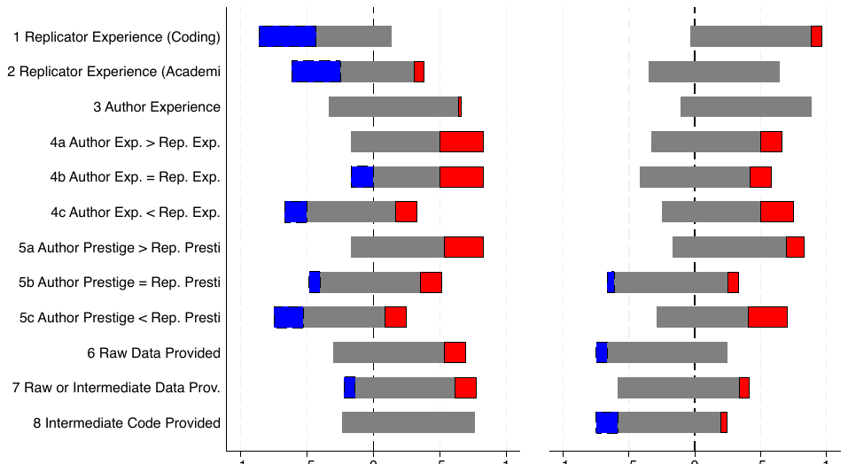
They began by analyzing originally statistically significant results and answering the first question "Does reproducibility/replicability rate depend on reproducers' experience coding?" Specifically, most of the teams estimated a negative coefficient in a regression with reproducibility as the dependent variable and a measure of their choosing for reproducers' experience as the primary independent variable, that is, the relationship is far more likely to be negative than positive. We interpret this result to mean that reproducers who are more experienced (broadly defined, as each of the many analysts defined experience independently) are better able to detect non-robust results in their chosen paper; likening the notion of the 'trained eye' of a detective finding subtle clues the untrained eye may miss at the scene. The remaining 11 pre-specified hypotheses that the analysts tested were whether reproducibility is associated with: (2) reproducers' experience in academia, (3) the original authors' experience in academia, whether authors have (4a) more, (4b) similar, or (4c) less experience than reproducers, (5a) more, (5b) similar, or (5c) less prestige (their institution, defined independently by the analysts) than reproducers, and whether (6) raw data was provided (7) raw or intermediate data was provided, and (8) whether cleaning code was provided.
Among results that were originally statistically significant, the first hypothesis yielded the clearest finding: the more experience a reproducer team had, the lower the robustness rate they found. One plausible interpretation of our main results therefore is that robustness in our full sample would likely have been lower if equally highly qualified replicator teams had been assigned to each paper. However, according to the results presented in the main text (Determinants of Robustness), the provision of raw or intermediate data, or the necessary cleaning codes, does not seem to affect the robustness of research.
When analysts examined these same 12 hypotheses for originally statistically insignificant results, the relationships are far more likely to be positive than negative, but (as indicated by the proportion in gray) the relationships are often not statistically significant.
7. Effect Size
Figure 4 displays publication and re-analysis effect sizes. In economics and political science, effect sizes are largely reported as non-unit-less regression coefficients, whereas in other sciences, effect sizes are often reported using more comparable measures such as Cohen's-d. Because raw effect sizes vary widely between original studies, each of the markers are standardized by the within-article average published effect size (e.g., estimated effects of 2, 4, and 6 are standardized within publication to be 0.5, 1.0, and 1.5).
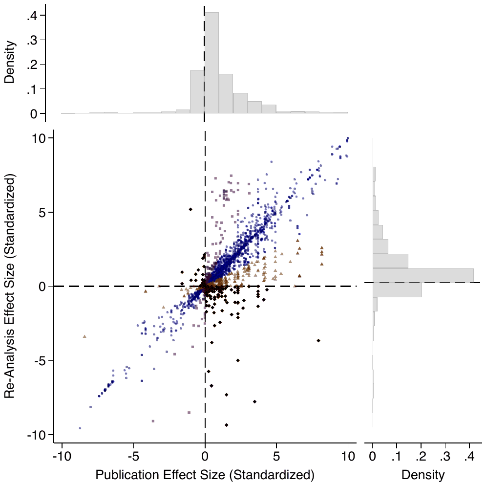
We find that, on average, the median effect size of a re-analysis is equivalent to the published effect size (i.e., 99% the size of the published effect), while the mean replicated effect is 9% larger than the original. Extended Data Figure 10 illustrates the distribution effect sizes of re-analyses. This result is in stark contrast to previous projects focused on replication with new data in psychology or social science experiments uncovering replication rates ranging from 50 to 66%24–26. Three major differences between our project and these replication efforts are that we focus on robustness as opposed to replication with new data, our focus is on recent articles, and that our sample is composed mostly of non-experimental studies using secondary data.
8. Coding Errors and Recoding
We investigate the prevalence of coding errors and discrepancies between the code and article. Computational reproducibility pertains to the provided replication folder's ability to reproduce the exhibits and statistics displayed in the research (manuscripts, appendices, etc.). Reproducers may be able to reproduce all exhibits exactly as they appear (computationally reproducible), but the exhibits may have been constructed with coding errors or discrepancies.
Except for minor inconveniences (i.e., missing packages or broken pathways), we identify coding errors in approximately 25% of the studies, with some studies containing multiple errors (Supplementary Materials 11.10). The prevalence of coding errors is larger for economics (26%) than political science (16%). Types of errors include: defining the dependent variable, defining the main independent variable, defining control variables, mis-specification of the estimation/model, inference or the sample. While not all of these coding errors impacted the conclusions of the original studies, we uncover several significant errors that warrant discussion. These major errors include instances of duplicated observations on a large scale, incomplete interaction in a difference-in-differences model, mislabeling the main treatment variable for a substantial number (or all) of observations, and using different models, or estimators, than reported in the article.
It is important to note that this 25% figure likely underestimates the true prevalence of coding errors. Reproducers may have missed some errors, and many replication packages do not include raw data or data-cleaning code, limiting the ability to detect additional issues.
A number of reproducers also recoded the analysis using a different statistical software. Out of 23 recoding exercises, we find major differences for three studies and minor differences for 10 studies. Two of the major differences were uncovered when using a different software and looking at the authors' code. Additionally, one team who computationally reproduced the results using a different version of the software used by the authors uncovered noteworthy differences in the magnitude and significance of the estimates (Supplementary Materials 11.9).
9. Communication with Original Authors
I4R shares completed reproduction reports with original authors before public release28. Reports are reviewed typically by A.B. or another board member mainly for tone and structure. I4R then disseminates the report and any author response simultaneously (see SI for the full list of reports). Reproducers may revise their reports after receiving feedback from original authors.
About 95% of contacted authors responded (including one case where an author was unreachable after leaving academia). Among respondents, 11% provided only brief notes or indicated they could not respond, 59% offered informal feedback, and 30% supplied a formal response. For comparison, 37 report that roughly 25% of authors in their sample provided a formal response.
Roughly two-thirds of reproducers indicated that interactions with original authors improved their reports, often by clarifying variables or procedures, supplying data or data-access instructions, or helping adjust tone. In one case, original authors conducted additional robustness checks in their non-public files at the reproducers' request.
Lastly, we assess agreement between authors and reproducers. Authors' final responses were coded for whether disagreements remained after mediation; only 23% of articles showed any remaining disagreement. Further details appear in the Supplementary Materials.
10. Discussion
A substantial information asymmetry exists between authors and the broader academic community, including reviewers and editors30. Reviewers rarely see the underlying data and code and may be unaware of crucial coding decisions, even as journals routinely request multiple robustness checks. This limited visibility means major errors or inconsistencies can go undetected.
Large-scale reproducibility initiatives offer a promising way to address these challenges in the social sciences and beyond. Our project provides a systematic, scalable approach to evaluating reproducibility and robustness, with the goal of increasing transparency and improving the credibility of published research. While stronger incentives to conduct reproducibility and robustness remain necessary, we do not attempt to evaluate which specific incentives would be most effective, as doing so would require speculation beyond the scope of our data. Identifying the most effective incentives is an important research question that we hope future work will address.
Given the low prevalence of diagnostic replication in published work38, the scale of this ongoing effort could shift research norms. By encouraging more rigorous methodologies, deterring questionable research practices, and emphasizing collaboration, it may help place greater weight on the reliability of results in publication decisions.
Although our journal sample is selective, the findings are encouraging and suggest a high level of computational reproducibility. These patterns—and the existence of a large-scale, community-driven effort—may strengthen trust in published results.
We also asked reproducers about the quality of the replication packages they examined. Over 40% reported gaining a more optimistic view of the discipline, while only about 5% developed a more negative opinion. This suggests that mass reproduction of studies accompanied by replication packages can directly enhance researchers' trust in scientific findings.
The initiative's success and scalability have been driven by the intrinsic motivation of participating researchers to support open science and improve their technical skills. By late 2025, I4R had organized 80 replication games involving over 3,500 researchers, with events held every other week. These efforts show that the skilled labor needed for large-scale reproduction can emerge organically from an engaged research community.
The project also has the potential to advance science and improve equity. Publicly posting data and code facilitates learning, speeds methodological diffusion, and enables independent verification. Reproducing analyses in open-source software can also help level the playing field for researchers who lack access to expensive licenses.
Our results have limitations. Only a small number of economics and political science journals currently require data and code17,18, and even fewer check reproducibility39. Thus, our findings largely reflect leading journals with strong data-sharing norms. Future research should assess reproducibility more broadly by examining a random sample of papers from journals with and without data availability policies.
11. Methods
Our focus is on 12 journals. The journals are the following for economics: American Economic Review, American Economic Review: Insights, American Economic Journal: Applied Economics, American Economic Journal: Economic Policy, American Economic Journal: Macroeconomics, The Economic Journal, Journal of Political Economy, Quarterly Journal of Economics, Review of Economic Studies. For political science, the journals are: American Journal of Political Science, American Political Science Review, and Journal of Politics.
We have two streams to generate reproductions.
I4R's Board.
First, I4R has a board of editors who recommend potential reproducers. All board members are nominated by the lead author, A.B. He then reaches out to the board for suggestions of reproducers who could be a good fit for the studies in the targeted journals.
Replication Games.
Our second stream to generate reproductions and replications is the replication games (Games). Games are one-day meet-ups open to faculty, post-docs, graduate students and other researchers. Participants join a small team of about 3-5 researchers all working in the same subfield (e.g., development economics).
11.1. Types of Re-Analyses
We group re-analyses into eight groups: (i) alternative control variables, (ii) change the sample, (iii) change (coding of) the dependent variable, (iv) change (coding of) the main independent variable, (v) change estimation method, (vi) change inference method, (vii) change weighting scheme and (viii) replication using new data.
11.2. Robustness for Figures
While the bulk of our analysis compares coefficients and statistical significance from the original study and the work of reproducers, many results in papers are also displayed in figures. For those which are plots of coefficients (i.e., event studies) we encouraged reproducers to give the underlying statistics used to create the graph. This was often at the discretion of the reproducers: it could be taxing to write new code to compare and extract those values. In one example, the underlying programs which were written by the original authors were too complicated to modify with robustness checks. Excepting anecdotal examples, many teams found it feasible to reproduce a figure as part of a robustness check or direct replication. In those circumstances, we (A.B. and D.M.) tried to subjectively describe if we believed the results were the same. This was usually taken with the discussion of the reproducers and reading the original paper. We find that 189 out of 263 figures—71.9 percent—we believe to have display the same result as the original paper and can be reasonably compared.
11.3. Non Comparable Re-Analyses
As mentioned earlier, a direct comparison is not possible between the original analysis and the reproducers' analysis for about 15% of re-analyses. In applied microeconomics and politics papers, this may be due to a change in the estimator or a change in the scale of the dependent or main independent variable. There are also scenarios where the original paper uses methods where coefficient estimates and p-values are not the objective of the analysis. This is apparent in a few empirical macroeconomics papers teams looked at. A common "robustness check" would be to adjust parameters which enter a model, possibly using accepted values in the field or estimated from an alternative dataset.
82 articles have at least one non-comparable estimate. Only a small proportion (10 re-analyses) were not directly comparable for all reported re-analysis estimates. For not directly comparable re-analyses, we report the proportion that reproducers indicated were of the same statistical significance as the original and same sign. For our four definitions of reproducibility and replication rates these are: When the original estimate is statistically significant at the 5% level, 85% of those we considered not directly comparable indicated their re-analysis was of the same significance (93% for the 10% level). When the original estimate was not statistically significant at the 5% level, 88% of those we considered not directly comparable indicated their re-analysis was of the same (non)significance (92% for the 10% level).
11.4. Study Selection
Not all studies from our targeted journals have been reproduced or replicated. Our approach leads to an over-representation of studies using publicly available data. Another feature of our sample is that the targeted journals have a data availability policy and enforce it. This is in contrast to many top field journals in both economics and political science. Our sample should thus be viewed as very selected both in terms of impact and high data and code availability rates. In fact, approximately 45% of replication packages in our sample included raw data and complete cleaning code. An additional 13.5% provided partial cleaning code.
11.5. Journal Policy
The American Journal of Political Science does not have a data editor. Instead, the computational reproducibility is carried out by the staff at the Odum Institute for Research in Social Science, at the University of North Carolina, Chapel Hill. The journals which do not conduct reproducibility checks are the American Political Science Review, the Journal of Political Economy and the Quarterly Journal of Economics. The other journals conduct computational reproducibility internally.
Data editors make sure that the replication packages include the data and codes, and that the documentation (e.g., Readme) is complete. In the event that the authors cannot share some or all the data, they request that information is provided on how other researchers could obtain the data set(s). Their teams also run the codes and make sure that the output is similar to what is reported in the article. They do not look for coding errors nor run robustness checks.
11.6. Many-Analysts Approach
Our approach and research questions, which we detail below, were pre-registered. Our pre-analysis plan was pre-registered here: https://osf.io/8wsqx/. The pre-analysis plan was pre-registered prior to sharing the Meta Database with analysts. See the SI for more information on the Meta Database.
The six analyst teams tackled the following eight questions:
- 1. "Does reproducibility/replicability rate depend on replicators' experience coding?"
- 2. "Does reproducibility/replicability rate depend on replicators' academic experience?"
- 3. "Does reproducibility/replicability rate depend on the authors' experience?"
- 4. "Does reproducibility/replicability rate depend on the interaction of the authors' experience and replicators' experience?" In particular:
- (a) Are reproducibility/replicability rate higher when authors' experience is high, and replicators' experience is low (in comparison to similar levels)?
- (b) Are reproducibility/replicability rate higher when authors' experience and replicators' experience is similar (in comparison to dissimilar levels)?
- (c) Are reproducibility/replicability rate higher when authors' experience is low, and replicators' experience is high (in comparison to similar levels)?
- 5. "Does reproducibility/replicability rate depend on the interaction of the authors' prestige and replicators' prestige?" In particular:
- (a) Are reproducibility/replicability rate higher when authors' have high prestige, and replicators' experience have low prestige (in comparison to similar levels)?
- (b) Are reproducibility/replicability rate higher when authors' and replicators' prestige is similar (in comparison to dissimilar levels)?
- (c) Are reproducibility/replicability rate higher when authors' have low prestige, and replicators' experience have high prestige (in comparison to similar levels)?
- 6. "Does reproducibility/replicability rate depend on the original authors providing raw data?"
- 7. "Does reproducibility/replicability rate depend on the original authors providing raw or intermediate data?"
- 8. "Does reproducibility/replicability rate depend on the original authors providing cleaning code?"
11.6.1 Data for Analysts
Analysts were not given access to raw data (database, team leader surveys, individual surveys). Rather, they were given access to intermediate/analytical data which was cleaned and merged in a manner which would be consistent for their analysis. Giving researchers a downstream dataset allowed A.B. and D.M. to make restrictions on what the analysts could do. The clearest example of this would be defining dependent variables which were not allowed to be changed - providing a consistent definition between analysts. Asking certain research questions also restricted the data given to the analysts. These restrictions were done in ways so that any analysis done would be more comparable.
The backbone of the data provided to analysts was the Meta Database, of which questions from the team leader surveys and individual surveys were added. Much of the information from the individual surveys were aggregated to the report level.
The data given to the analysts changed as reproduction reports, team leader and individual surveys were completed. In total, we provided 13 updated databases for analysts between November 6th, 2023 and February 12th, 2024. We did this to give analysts time to create scripts which would work with partial datasets as we worked to gather reports and surveys. This allowed analysts to expedite their analysis once the full dataset was constructed.
The goal was to have each team answer each research question independently. Each team received the same instructions and data. We allowed full flexibility to all teams. Teams were allowed to use any statistics package, statistical model, inference, weighting scheme, etc. Teams were free to choose the independent variables and how to code them. Teams were also free to construct their own derived variables from the dataset given to them.
We provided the four dependent variables and the database to all teams. They were allowed to use any of the provided variables and new data. The only restriction imposed on teams is that they needed to use our four main dependent variables.
11.6.2 Team Construction
We asked a subset of coauthors on this paper (reproducers) if they would like to help analyze our database. We informed them that we would "have different teams independently working together at answering the same research questions (e.g., what is the reproducibility/replicability rate for each specific type of robustness checks/recoding)." The subset of coauthors who received an invitation to volunteer were: (1) contacted between September 21st and October 8th 2023 and (2) had completed, or were near completion of, their reproduction report. We sent invitations (a simple sign-up form) in an email which also asked the reproducers to respond to individual and team leader surveys which formed parts of our previous analysis. About 110 co-authors were invited between September 21st and October 8th. 10 individuals ultimately signed-up as "many-analysts."
In our request for volunteers, we asked volunteers if they: (1) had a team who wanted to do research on the project; (2) wanted to be added to a team; (3) wanted to work on the analysis alone. No one joined as teams, most people wanted to be added to a team, and the remainder wanted to work alone. For those that wanted to work together, we assembled teams as best we could so they were close enough in timezones. We had two teams of three, one team of two, and two individuals. A.B. and D.M. also acted as a team of two, yielding six teams in total. No members of any teams left during the analysts phase.
Although the PI ultimately provided each volunteer with a payment of $3,000 CAD, this compensation was not disclosed or anticipated at the time they agreed to participate.
11.7. Database: Sample Composition
The database described above provides 6,583 re-analyzed test statistics from 103 reproduction reports. (Seven reports did not include robustness checks.) The other test statistics are estimates obtained by re-coding the analysis.
Supplementary Materials Appendix Table 11 provides summary statistics for the full sample and by journal. In total, 83 reproduction reports were completed through Games in comparison to 27 through the editorial board stream. 79 reproduction reports are for the field of economics against 31 for political science.
There is no universally agreed upon criterion for reproduction. As a first criterion, we follow much of the literature and define reproducibility as obtaining a statistically significant effect in the same direction (positive or negative) as the original study. Throughout, we rely on four main dependent variables:
- First Dependent Variable: dummy variable indicating whether the re-analysis is statistically significant at 5% level and same sign. For this dependent variable, we only keep original estimates statistically significant at the 5% level.
- Second Dependent Variable: dummy variable indicating whether the re-analysis is statistically significant at 10% level and same sign. For this dependent variable, we only keep original estimates statistically significant at the 10% level.
- Third Dependent Variable: dummy variable indicating whether the re-analysis remains not statistically significant at 5% level. For this dependent variable, we only keep original estimates statistically insignificant at the 5% level.
- Fourth Dependent Variable: dummy variable indicating whether the re-analysis remains not statistically significant at 10% level. For this dependent variable, we only keep original estimates statistically insignificant at the 10% level.
The average number of re-analyzed test statistics per article is about 60. The standard deviation is very high (73), with a maximum of 421. This is unsurprising given that some teams, for instance, focused most of their attention to (blindly) recoding using the raw data (either provided by the authors or re-downloaded by the reproducers), while other teams have focused solely on conducting robustness checks for multiple central hypotheses. As an illustrative example, imagine that an original article has three main outcome variables and relies on two main specifications. If the reproducers conduct five different robustness checks for each outcome variable and specification, then this would lead to 30 re-analyzed test statistics.
As a robustness check, we deal with this issue by adjusting the weight of each test statistics by the inverse number of such statistics in the reproduction report such that each reproduction report has the same weight.
Supplementary Materials Appendix Table 2 provides descriptive statistics. The articles in our sample are all recently published with a relatively small number of Google Scholar citations (44 on average) as of the completion of a reproduction report. The original authors are more experienced than reproducers with 11 years of experience (i.e., years since completing their Ph.D.) against 3. Original authors have on average 4,269 Google Scholar citations in comparison to 478 for reproducers. Those differences are mostly driven by the larger share of graduate students among reproducers than for original authors (49% against 6%). There are about 2.6 original authors per article in comparison to 3.2 for reproducers. About 15% of reproducers have recently published in a Top 5 or one of the three leading political science journals in our sample. Approximately 30% have published in those journals or in one of the other journals in our sample.
While reproducers have less academic experience than original authors on average, their level of expertise as programmers is quite advanced. About 10%, 48% and 33% of reproducers report that their level of expertise is "Expert", "Proficient" and "Competent," respectively. Moreover, about 55% of reproducers had already produced a replication package for their own work or journal publication.
11.8. Computational Reproducibility
We rely on the Social Science Reproduction Platform (SSRP)'s 10-point scale to document computational reproducibility. This scale is useful as it is standardized and offers more details than a simple indicator for whether the results are computationally reproducible (Visit https://bitss.github.io/ACRE/assessment.html#score for more details on SSRP and this scale). On this scale, a rating of 1 signifies the incapacity to reproduce results due to the absence of data or code, while a rating of 10 indicates the capability to faithfully reproduce results from the raw data (unaltered files obtained by the authors from the sources cited in the paper) to the final numerical results as published in the paper.
The following is a direct reproduction from the Guide for Accelerating Computational Reproducibility in the Social Sciences.
- Level 1 (L1): No data or code are available. Possible improvements include adding: raw data, analysis data, cleaning code, and analysis code.
- Level 2 (L2): Code scripts are available (partial or complete), but no data are available. Possible improvements include adding: raw data and analysis data.
- Level 3 (L3): Analytic data and code are partially available, but raw data and cleaning code are missing. Possible improvements include: completing analysis data and/or code, adding raw data, and adding analysis code.
- Level 4 (L4): All analytic data sets and analysis code are available, but the code fails to run or produces results inconsistent with the paper (not CRA). Possible improvements include: debugging the analysis code or obtaining raw data.
- Level 5 (L5): Analytic data sets and analysis code are available and they produce the same results as presented in the paper (CRA). The reproducibility package may be improved by obtaining the original raw data.
Note: This is the highest level that most published research papers can attain currently. Computational reproducibility from raw data is required for papers that are reproducible at Level 6 and above.
- Level 6 (L6): Cleaning code scripts are available (partial or complete), but raw data is missing. Possible improvements include: adding raw data.
- Level 7 (L7): Cleaning code is available and complete, and raw data is partially available. Possible improvements: adding raw data.
- Level 8 (L8): All the materials (raw data, analytic data, cleaning code, and analysis code) are available. However, the cleaning code fails to run or produces different results from those presented in the paper (not CRR) or the analysis code fails to run or produces results inconsistent with the paper (not CRA). Possible improvements: debugging the cleaning or analysis code.
- Level 9 (L9): All the materials (raw data, analytic data, cleaning code, and analysis code) are available. The analysis code produces the same output as presented in the paper (CRA). However, the cleaning code fails to run or produces different results from those presented in the paper (not CRR). Possible improvements: debugging the cleaning code.
- Level 10 (L10): All necessary materials are available and produce consistent results with those presented in the paper. The reproduction involves minimal effort and can be conducted starting from the analytic data (CRA) and the raw data (CRR). Note that Level 10 is aspirational and may be unattainable for most research published today.
Each team was asked to assign a reproducibility score on a scale of one to ten to the paper reproduced. This involved documenting the completeness of the data and code, and whether the materials produce results consistent with those in the article. Their focus for computational reproducibility is only for the claims that they have investigated rather than all exhibits in the article.
The results are presented in Extended Data Figure 1. This figure shows the variation across papers, with the highest concentration of scores concentrated at levels 10 and 5. Indeed, over 85% (Levels 5 and 10) of results examined in our sample were fully reproducible using either: (1) the raw and analytical data, or; (2) the analytical data when the raw data were not provided. Level 10 (L10) means that all necessary materials are available and produce consistent results with those presented in the paper. Level 5 (L5) means that analytic data sets and analysis code are available, and they produce the same results as presented in the paper. In other words, L5 indicates that the reproducers successfully (computationally) reproduced the numerical results using the analytical data, but the raw data were not provided, while L10 indicates that the reproducers successfully (computationally) reproduced the numerical results using the raw data and cleaning and analytical codes.
The remaining 15% includes studies for which analytic code and data are partially available and studies for which some of the codes (cleaning or analytic) fail to run or produce results inconsistent with the paper. These findings suggest very high rates of computationally reproducible results.
Our results are in stark contrast with several studies documenting low computational reproducibility rates13,19,40. This is perhaps unsurprising given that most of the articles in our sample were already computationally reproduced by data editors. This highlights the open science movement has improved computational reproducibility of research findings in leading economics and political science journals. Our approach is also different as we are targeting newer studies and only articles for which (at least) analytical data were available to the teams of reproducers. A more comparable (and recent) study is 37 which assess the reproducibility of nearly 500 articles published in the journal Management Science. They find that more than 95% of articles could be reproduced if data accessibility and software requirements were not an obstacle for reproducers.
11.9. Recoding
We now turn to recoding exercises conducted by a subset of teams. Those teams either recoded using a different software language or used the same software without looking at the original authors' code. In total, 19 teams of reproducers engaged in computationally reproducing and checking for coding errors using a different statistical software than the original authors. This may be due to reproducers being more comfortable in another software language or the availability of specific commands (to run a robustness check). Five teams also recoded the empirical analysis without looking at the authors' code/programs.
Recoding in a different software opens up the ability for others to benefit and understand the empirical foundations of published articles in ways that the original authors may not have been able to convey. For instance, verifying reproducibility by translating it into R or Python makes the study itself accessible to many more researchers.
Recoding also helps to assess the importance of differing assumptions embedded within programming languages (e.g., different types of Random Number Generations, rounding rules and numerical precision). We categorized recoding exercises done by reproducers into three categories: (i) identical numerical results, (ii) minor differences, and (iii) major differences. Minor differences involve small numerical discrepancies between the authors' estimates and those obtained by the reproducers. Those differences do not lead to important changes in significance or magnitude. In contrast, major differences lead to major differences in one or multiple claims.
11.10. Coding Errors and Discrepancies
We now turn to documenting the prevalence of coding errors and discrepancies between the code and the published article. Of note, a paper might be fully reproducible, but the programs may contain coding errors. Similarly, there might be important discrepancies between what the article states and what the programs compute, while remaining computationally reproducible.
We do not document trivial coding errors such as versioning issues and missing packages/paths. Those coding errors are typically easily fixed by the reproducers. We instead focus on coding errors which could have had an impact on claims and conclusions of articles.
We uncover minor or major coding errors in 26 of the 110 studies in our sample, with some studies containing multiple errors. The errors can be broadly categorized into errors of the dependent variable (4 articles), main independent variable (5), control variables (10), estimation (2), inference (2), sample/observations (8) and other (5). While not all coding errors lead to changes in the conclusions of the original study, we uncovered several major coding errors worth discussing. Some examples of major errors include: a very large number of duplicated observations, failing to fully interact a difference-in-differences regression specification, miscoding the treatment variable for a large number of (or all) observations, and clear model misspecification.
The prevalence of coding errors is larger for economics (26%) than political science (16%). A plausible explanation is that replication packages from economic articles have more lines of code than those in political science, mechanically increasing the likelihood of at least one coding error.
We also uncovered transcription issues for 13 studies, typically involving small numerical differences or rounding errors not impacting the claims or conclusions of the article.
11.11. Time Trends in Data and Code Availability
To document time trends in data and code availability in economics and political science between 2014 and 2023, we randomly sampled 10 empirical articles per year for each of our 12 target journals. We define an article as empirical if it relies on real or simulated data at any point in the text. Thus, a theoretical article that is motivated with a descriptive analysis of labor market trends, or an econometric paper showing properties of an estimator on synthetic data would both be classified as empirical for the purposes of our study.
To randomly select papers, we proceeded as follows: First, we noted the number of issues per journal per year. Second, we drew ten issues (with replacement) for each year. Third, for each issue, we generated a random permutation of numbers between 1 and 35, giving us the order in which papers from a given issue should be considered. So, for example, if the first issue drawn was 4, and the first number in our permutation sequence was 10, we would consider the tenth article in the fourth issue for coding. We skipped an article and proceeded with the next number in the permutation if the article in question a) was not empirical, b) was not a standard article (we excluded comments, replies and corrections, retraction notices, and editor notes, even if they were empirical in nature), c) was a duplicate that had already been considered (e.g., issue number one, article number five, was drawn twice in a row), or d) did not exist (our chosen journals typically publish around ten articles per issue, so higher numbers in the permutation often went unused).
In our coding we considered whether the journal website or the article pdf contain a link to a replication package, whether this package is accessible, and what the contents of the package are. We tracked the availability of a Readme file, cleaning and analytical code, and raw, intermediate, and final data. Note that our coding of code availability is optimistic in the sense that we only note whether a particular type of code exists; we did not verify its completeness or correctness. However, when authors explicitly indicated that a code was incomplete, we noted this information.
Of note, the American Economic Review: Insights only formally became a journal in 2019. For the five years earlier, we did not collect for this journal, leading to 10 fewer papers per year.
Extended data
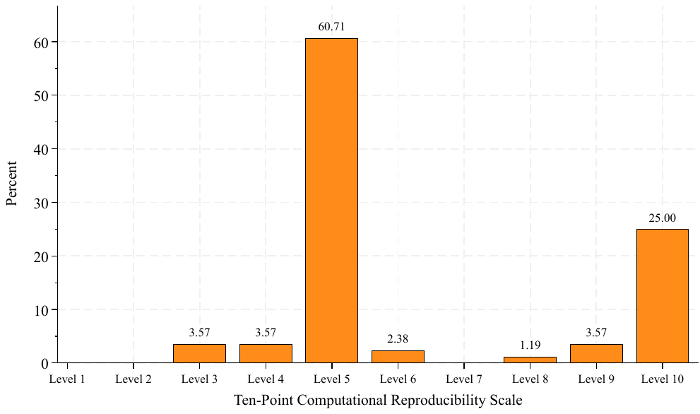
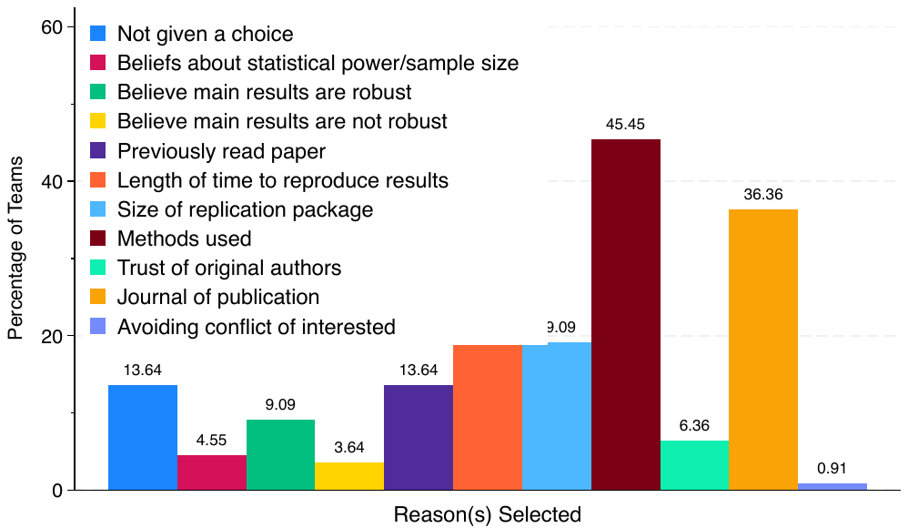
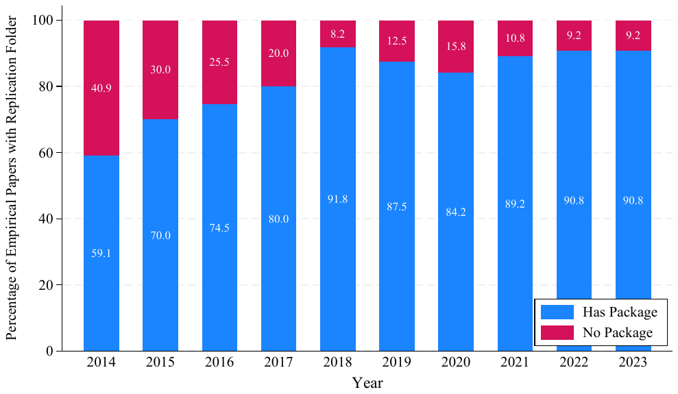
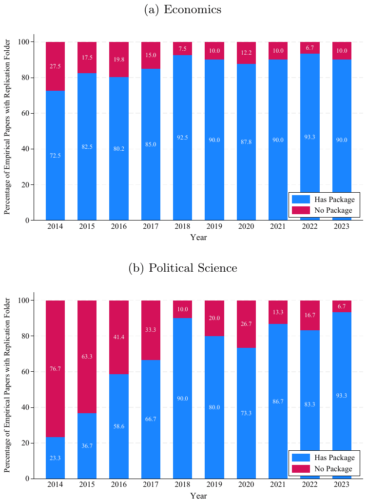
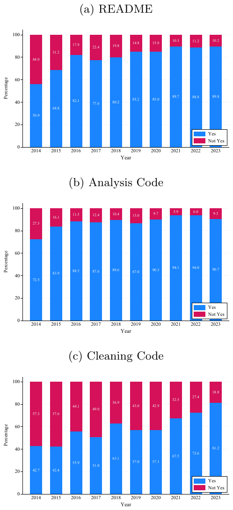
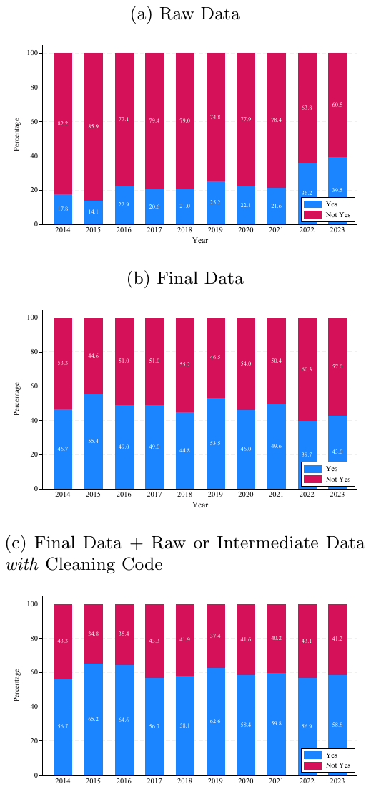
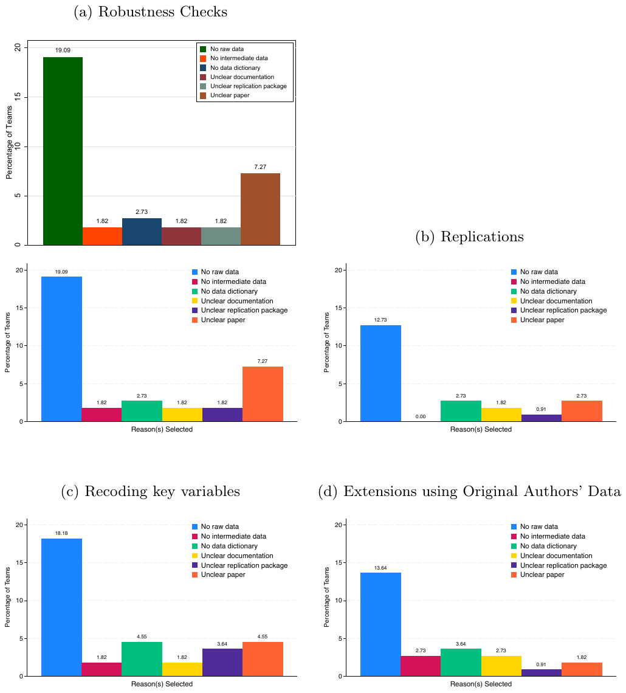
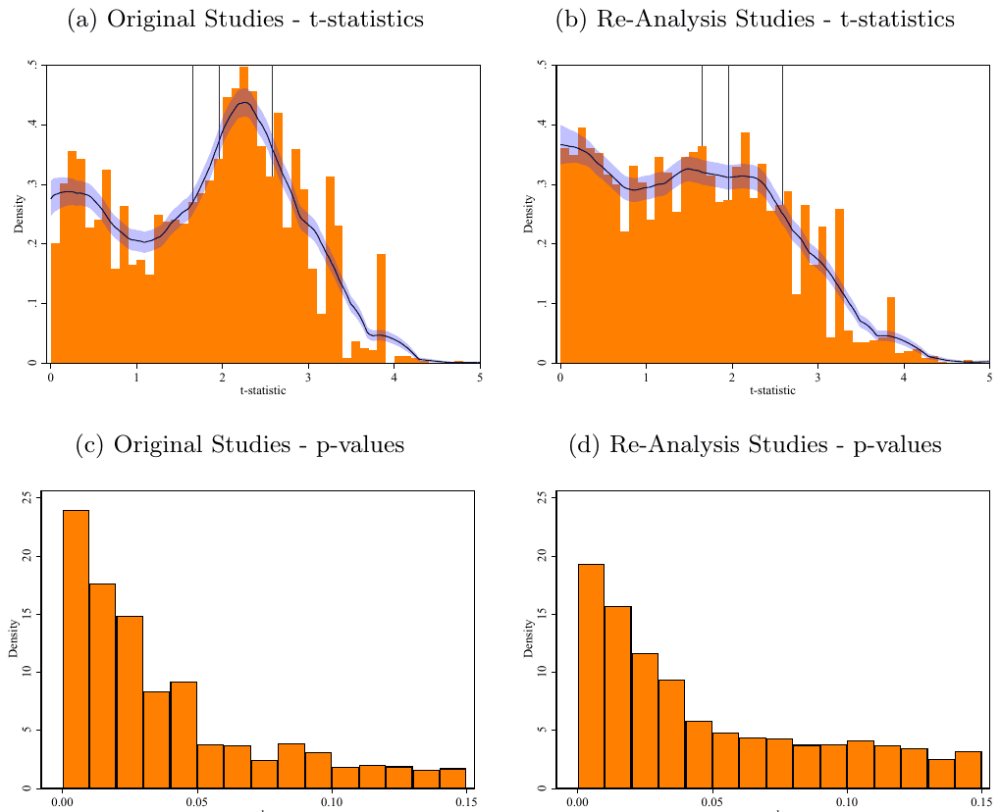
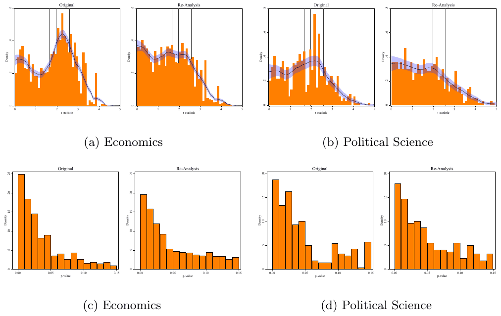
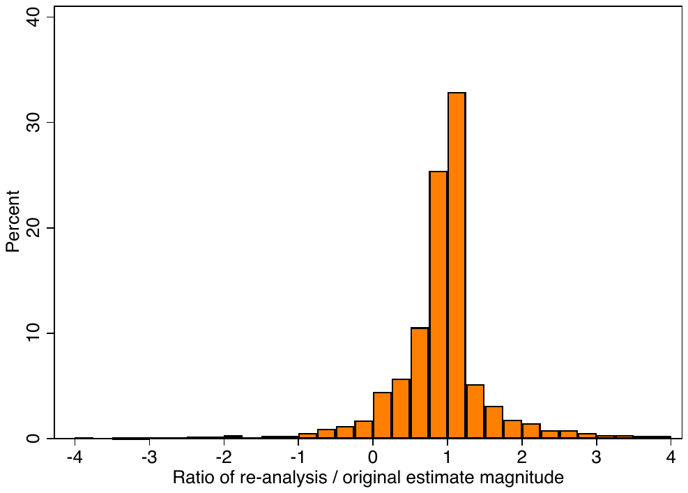
Author list
Abel Brodeur, Derek Mikola, Nikolai Cook, Lenka Fiala, Thomas Brailey, Ryan Briggs, Alexandra de Gendre, Yannick Dupraz, Jacopo Gabani, Romain Gauriot, Joanne Haddad, Goncalo Lima, Jörg Ankel-Peters, Anna Dreber, Douglas Campbell, Lamis Kattan, Diego Marino Fages, Fabian Mierisch, Pu Sun, Taylor Wright, Marie Connolly, Fernando Hoces de la Guardia, Magnus Johannesson, Edward Miguel, Lars Vilhuber, Alejandro Abarca, Mahesh Acharya, Sossou Simplice Adjisse, Ahwaz Akhtar, Eduardo Alberto Ramirez Lizardi, Sabina Albrecht, Synøve Nygaard Andersen, Zubaria Andlib, Falak Arrora, Thomas Ash, Etienne Bacher, Sebastian Bachler, Félix Bacon, Manuel Bagues, Timea Balogh, Alisher Batmanov, Mara Barschkett, B. Kaan Basdil, Jaromír Baxa, Sascha Becker, Monica Beeder, Louis-Philippe Beland, Abdel-Hamid Bello, Daniel Benenson Markovits, Grant Benjamin, Thomas Bergeron, Moussa Blimpo, Marco Binetti, Carl Bonander, Joseph Bonneau, Endre Borbáth, Nicolai Topstad Borgen, Solveig Topstad Borgen, Jonathan Borowsky, Elisa Brini, Myriam Brown, Martin Brun, Stephan Bruns, Nino Buliskeria, Andrea Calef, Alistair Cameron, Pamela Campa, Santiago Campos-Rodríguez, Giulio Giacomo Cantone, Fenella Carpena, Perry Carter, Paul Castañeda Dower, Ondrej Castek, Jill Caviglia-Harris, Gabriella Chauca Strand, Shi Chen, Sya In Chzhen, Jong Chung, Jason Collins, Alexander Coppock, Hugo Cordeau, Ben Couillard, Jonathan Crechet, Lorenzo Crippa, Jeanne Cui, Christian Czymara, Haley Daarstad, Danh Chi Dao, Daniel Dao, Marco David Schmandt, Astrid de Linde, Lucas De Melo, Lachlan Deer, Micole De Vera, Velichka Dimitrova, Jan Fabian Dollbaum, Jan Matti Dollbaum, Michael Donnelly, Luu Duc Toan Huynh, Tsvetomira Dumbalska, Jamie Duncan, Kiet Tuan Duong, Thibaut Duprey, Christoph Dworschak, Sigmund Ellingsrud, Ali Elminejad, Yasmine Eissa, Andrea Erhart, Giulian Etingin-Frati, Elaheh Fatemipour, Alexa Federice, Jan Feld, Guidon Fenig, Mojtaba Firouzjaeiangalougah, Erlend Fleisje, Alexandre Fortier-Chouinard, Julia Francesca Engel, Nadjim Fréchet, Reid Fortier, Tilman Fries, Michael James Frith, Thomas Galipeau, Sebastián Gallegos, Areez Gangji, Xiaoying Gao, Cloé Garnache, Attila Gáspár, Evelina Gavrilova, Arijit Ghosh, Garreth Gibney, Grant Gibson, Geir Godager, Leonard Goff, Da Gong, Javier González, Jeremy D. Gretton, Cristina Griffa, Idaliya Grigoryeva, Maja Grøtting, Eric Guntermann, Jiaqi Guo, Alexi Gugushvili, Hooman Habibnia, Sonja Häffner, Jonathan D. Hall, Olle Hammar, Amund Hanson Kordt, Barry Hashimoto, Jonathan S. Hartley, Carina I. Hausladen, Tomáš Havránek, Harry He, Matthew Hepplewhite, Mario Herrera-Rodriguez, Felix Heuer, Anthony Heyes, Anson T. Y. Ho, Jonathan Holmes, Armando Holzknecht, Yu-Hsiang Dexter Hsu, Shiang-Hung Hu, Yu-Shiuan Huang, Mathias Huebener, Christoph Huber, Kim P. Huynh, Zuzana Irsova, Ozan Isler, Niklas Jakobsson, Raphaël Jananji, Tharaka A. Jayalath, Michael Jetter, Jenny John, Rachel Joy Forshaw, Felipe Juan, Valon Kadriu, Sunny Karim, Edmund Kelly, Duy Khanh Hoang Dang, Tazia Khushboo, Jin Kim, Gustav Kjellsson, Anders Kjelsrud, Andreas Kotsadam, Jori Korpershoek, Lewis Krashinsky, Suranjana Kundu, Alexander Kustov, Nurlan Lalayev, Audrée Langlois, Jill Laufer, Blake Lee-Whiting, Andreas Leibing, Gabriel Lenz, Joel Levin, Peng Li, Tongzhe Li, Yuchen Lin, Ariel Listo, Dan Liu, Xuewen Lu, Elvina Lukmanova, Alex Luscombe, Lester R. Lusher, Ke Lyu, Hai Ma, Nicolas Mäder, Clifton Makate, Alice Malmberg, Adit Maitra, Marco Mandas, Jan Marcus, Shushanik Margaryan, Lili Márk, Andres Martignano, Abigail Marsh, Isabella Masetto, Anthony McCanny, Emma McManus, Ryan McWay, Lennard Metson, Jonas Minet Kinge, Sumit Mishra, Myra Mohnen, Jakob Möller, Rosalie Montambeault, Sébastien Montpetit, Louis-Philippe Morin, Todd Morris, Scott Moser, Fabio Motoki, Lucija Muehlenbachs, Andreea Musulan, Marco Musumeci, Munirul Nabin, Karim Nchare, Florian Neubauer, Quan M. P. Nguyen, Tuan Nguyen, Viet Nguyen-Tien, Ali Niazi, Giorgi Nikolaishvili, Ardyn Nordstrom, Patrick Nüß, Angela Odermatt, Matt Olson, Henning Øien, Tim Ölkers, Miquel Oliver i Vert, Emre Oral, Christian Oswald, Ali Ousman, Ömer Özak, Shubham Pandey, Alexandre Pavlov, Martino Pelli, Romeo Penheiro, RyuGyung Park, Eva Pérez Martel, Tereza Petrovičová, Linh Phan, Alexa Prettyman, Jakub Procházka, Aqila Putri, Julian Quandt, Kangyu Qiu, Loan Quynh Thi Nguyen, Andaleeb Rahman, Carson H. Rea, Adam Reiremo, Laëtitia Renée, Joseph Richardson, Nicholas Rivers, Bruno Rodrigues, William Roelofs, Tobias Roemer, Ole Rogeberg, Julian Rose, Andrew Roskos-Ewoldsen, Paul Rosmer, Barbara Sabada, Soodeh Saberian, Nicolas Salamanca, Georg Sator, Daniel Scates, Elmar Schlüter, Cameron Sells, Sharmi Sen, Ritika Sethi, Anna Shcherbiak, Moyosore Sogaolu, Matt Soosalu, Erik Ø. Sørensen, Manali Sovani, Noah Spencer, Stefan Staubli, Renske Stans, Anya Stewart, Felix Stips, Kieran Stockley, Stephenson Strobel, Ethan Struby, John Tang, Idil Tanrisever, Thomas Tao Yang, Ipek Tastan, Dejan Tatić, Benjamin Tatlow, Féraud Tchuisseu Seuyong, Rémi Thériault, Vincent Thivierge, Wenjie Tian, Filip-Mihai Toma, Maddalena Totarelli, Van Tran, Hung Truong, Nikita Tsoy, Kerem Tuzcuoglu, Diego Ubfal, Laura Villalobos, Julian Walterskirchen, Joseph Tao-yi Wang, Vasudha Wattal, Matthew D. Webb, Bryan Weber, Reinhard Weisser, Wei-Chien Weng, Christian Westheide, Kimberly White, Jacob Winter, Timo Wochner, Matt Woerman, Jared Wong, Ritchie Woodard, Marcin Wroński, Myra Yazbeck, Chung Yang, Luther Yap, Kareman Yassin, Hao Ye, Jin Young Yoon, Chris Yurris, Tahreen Zahra, Mirela Zaneva, Aline Zayat, Jonathan Zhang, Ziwei Zhao, Yaolang Zhong
Declarations
Funding: We acknowledge support from Coefficient Giving and the Social Sciences and Humanities Research Council.
Conflict of interest/Competing interests: Any views expressed herein are the authors' personal opinions and not those of Ontario Public Service. The work by Jeremy D. Gretton was not undertaken under the auspices of Ontario Public Service as part of his employment responsibilities. The views expressed in this paper are those of the authors. No responsibility for them should be attributed to the Bank of Canada. The findings, interpretations, and conclusions expressed in this work are entirely those of the authors and do not necessarily reflect the views of the World Bank or its Board of Directors. The Center for Crisis Early Warning (Kompetenzzentrum Krisenfrüherkennung) is funded by the German Federal Ministry of Defense and the German Federal Foreign Office. The views and opinions expressed in this article are those of the author(s) and do not necessarily reflect the official policy or position of any agency of the German government. The views expressed in this paper are those of the authors and do not necessarily reflect the position of the Banco de España or the Eurosystem. All remaining errors are the authors' responsibility.
Data availability: The data are available on Zenodo (link: https://zenodo.org/records/17792605; DOI: 10.5281/zenodo.17792605) and OSF (link: https://osf.io/8wsqx/; DOI: 10.17605/OSF.IO/8WSQX). See OSF for our pre-analysis plan.
Code availability: The codes are available on Zenodo (https://zenodo.org/records/17792605) and OSF (https://osf.io/8wsqx/).
Author contribution:
Preparation of tables, figures, and manuscript
Abel Brodeur (University of Ottawa and Institute for Replication), Nikolai Cook (Wilfrid Laurier University), Derek Mikola (University of Ottawa and Institute for Replication), Lenka Fiala (University of Ottawa, Tilburg University and Institute for Replication)
Conception or design of the work
Jörg Ankel-Peters (RWI - Leibniz Institute for Economic Research), Abel Brodeur (University of Ottawa and Institute for Replication), Marie Connolly (UQAM), Nikolai Cook (Wilfrid Laurier University), Anna Dreber (Stockholm School of Economics), Fernando Hoces de la Guardia (Berkeley Initiative for Transparency in the Social Sciences), Magnus Johannesson (Stockholm School of Economics), Edward Miguel (UC Berkeley), Derek Mikola (University of Ottawa and Institute for Replication), Lars Vilhuber (Cornell University)
Analysis or interpretation of the reproducibility data
Thomas Brailey (University of Oxford), Ryan Briggs (University of Guelph), Abel Brodeur (University of Ottawa and Institute for Replication), Nikolai Cook (Wilfrid Laurier University), Alexandra de Gendre (The University of Melbourne), Yannick Dupraz (Paris Dauphine University, PSL University, LEDA, CNRS, IRD), Jacopo Gabani (World Bank & Centre for health economics, university of York), Romain Gauriot (Deakin University), Goncalo Lima (European University Institute and University of Bologna), Derek Mikola (Institute for Replication)
Analysis or interpretation of data And generating data And conception of a reproduction
Douglas Campbell (Independent Researcher), Nikolai Cook (Wilfrid Laurier University), Joanne Haddad (Universitat Autonoma de Barcelona), Lamis Kattan (School of Foreign Service, Georgetown University Qatar), Diego Marino Fages (Durham University), Fabian Mierisch (Independent Researcher), Pu Sun (Dongbei University of Finance and Economics), Taylor Wright (Brock University), Alejandro Abarca (Texas Tech University), Mahesh Acharya (University of Calgary), Sossou Simplice Adjisse (University of Wisconsin-Madison and African School of Economics), Ahwaz Akhtar (George Washington University), Eduardo Alberto Ramirez Lizardi (University of Oslo), Sabina Albrecht (University of Queensland), Synøve Nygaard Andersen (University of Oslo), Zubaria Andlib (Lancaster University and Federal Urdu University of Arts, Science and Technology), Falak Arrora (University of Warwick), Thomas Ash (Anderson School of Management, UCLA), Etienne Bacher (Luxembourg Institute of Socio-Economic Research), Sebastian Bachler (University of Innsbruck), Félix Bacon (Laval University), Manuel Bagues (University of Warwick), Timea Balogh (UC Davis), Alisher Batmanov (UC San Diego), Mara Barschkett (University of Bonn, IZA & DIW Berlin), B. Kaan Basdil (Risk Software Technologies), Jaromír Baxa (Institute of Economic Studies, Faculty of Social Sciences, Charles University, and Institute of Information Theory and Automation AS CR), Sascha Becker (University of Warwick and Monash University), Monica Beeder (University of Southampton), Louis-Philippe Beland (Carleton University), Abdel-Hamid Bello (University of Montreal), Daniel Benenson Markovits (Columbia University), Grant Benjamin (University of Toronto), Thomas Bergeron (Université de Montréal), Moussa P. Blimpo (University of Toronto), Marco Binetti (Institute of Intercultural and International Studies, University of Bremen), Carl Bonander (Karlstad Business School, Karlstad University), Joseph Bonneau (UC Davis), Endre Borbáth (Ruprecht-Karls-Universität Heidelberg), Nicolai Topstad Borgen (Centre for Research on Equality in Education, University of Oslo), Solveig Topstad Borgen (University of Oslo), Jonathan Borowsky (University of Minnesota), Thomas Brailey (University of Oxford), Ryan Briggs (University of Guelph), Elisa Brini (University of Florence), Myriam Brown (Laval University), Martin Brun (Finnish Centre of Excellence in Tax Systems Research, Tampere University), Stephan Bruns (Hasselt University, INCHER Kassel, METRICS Stanford), Nino Buliskeria (Nazarbayev University), Andrea Calef (University College London, School of Management), Alistair Cameron (Monash University), Pamela Campa (Stockholm Institute of Transition Economics), Santiago Campos-Rodríguez (University of California, Irvine), Giulio Giacomo Cantone (“Magna Graecia” University of Catanzaro), Fenella Carpena (Oslo Business School, Oslo Metropolitan University), Perry Carter (NYU Abu Dhabi), Paul Castañeda Dower (University of Wisconsin-Madison), Ondrej Castek (Masaryk University), Jill Caviglia-Harris (Salisbury University), Gabriella Chauca Strand (Institute of Medicine, University of Gothenburg), Shi Chen (School of Economics, Zhejiang University), Sya In Chzhen (University of East Anglia), Jong Chung (Auburn University), Jason Collins (University of Technology Sydney), Alexander Coppock (Northwestern University), Hugo Cordeau (University of Toronto), Ben Couillard (University of Toronto), Jonathan Crechet (University of Ottawa), Lorenzo Crippa (University of Strathclyde), Jeanne Cui (Beijing Normal University), Christian Czymara (Netherlands Interdisciplinary Demographic Institute), Haley Daarstad (UC Davis), Danh Chi Dao (Queen’s University), Daniel Dao (University of Oxford), Marco David Schmandt (TU Berlin), Astrid de Linde (University of Oslo), Lucas De Melo (University of Nottingham, NICEP), Lachlan Deer (University of Melbourne), Alexandra de Gendre (The University of Melbourne), Micole De Vera (Banco de España), Velichka Dimitrova (Social Research Institute, University College London), Jan Fabian Dollbaum (University College Dublin), Jan Matti Dollbaum (University of Fribourg and LMU Munich), Michael Donnelly (University of Toronto), Luu Duc Toan Huynh (Queen Mary University of London), Tsvetomira Dumbalska (University of Oxford), Jamie Duncan (University of Toronto), Kiet Tuan Duong (University of York), Yannick Dupraz (Paris Dauphine University, PSL University, LEDA, CNRS, IRD), Thibaut Duprey (Bank of Canada), Christoph Dworschak (German Institute for Development Evaluation & University of York), Sigmund Ellingsrud (BI Norwegian Business School), Ali Elminejad (Nazarbayev University), Yasmine Eissa (The American University in Cairo), Andrea Erhart (University of Innsbruck), Giulian Etingin-Frati (ETH Zurich), Elaheh Fatemipour (University of Warwick), Alexa Federice (UC Davis), Jan Feld (Victoria University of Wellington), Guidon Fenig (University of Ottawa), Lenka Fiala (University of Ottawa, Tilburg University and Institute for Replication), Mojtaba Firouzjaeiangalougah (Masaryk University), Erlend Fleisje (Oslo Economics), Alexandre Fortier-Chouinard (Université Laval), Julia Francesca Engel (Kiel University), Nadjim Fréchet (Concordia University), Reid Fortier (VisualAIM), Tilman Fries (LMU Munich), Michael James Frith (University of Edinburgh), Jacopo Gabani (World Bank & Centre for health economics, university of York), Thomas Galipeau (University of Toronto), Sebastián Gallegos (UAI Business School), Areez Gangji (Independent Researcher), Xiaoying Gao (University of York), Cloé Garnache (Oslo Metropolitan University), Attila Gáspár (ELTE Centre for Economic and Regional Studies; Central European University), Romain Gauriot (Deakin University), Evelina Gavrilova (NHH Norwegian School of Economics), Arijit Ghosh (RWI - Leibniz Institute for Economic Research), Garreth Gibney (University of Galway), Grant Gibson (Canadian Research Data Centre Network and McMaster University), Geir Godager (University of Oslo), Leonard Goff (University of Calgary), Da Gong (State University of New York, Geneseo), Javier González (Southern Methodist University), Jeremy D. Gretton (Ontario Public Service’s Behavioural Insights Unit), Cristina Griffa (University of Chile), Idaliya Grigoryeva (UC San Diego), Maja Grøtting (The Norwegian Institute of Public Health), Eric Guntermann (UC Berkeley), Jiaqi Guo (University of Birmingham), Alexi Gugushvili (University of Oslo), Hooman Habibnia (WU Vienna University of Economics and Business), Sonja Häffner (Peace Research Institute Oslo), Jonathan D. Hall (University of Alabama), Olle Hammar (Linnaeus University and Institute for Futures Studies), Amund Hanson Kordt (University of Oslo), Barry Hashimoto (Independent), Jonathan S. Hartley (Stanford University), Carina I. Hausladen (University of Konstanz), Tomáš Havránek (Institute of Economic Studies, Faculty of Social Sciences, Charles University; and Faculty of International Relations, Prague University of Economics and Business), Harry He (University of California, San Diego), Matthew Hepplewhite (University of Oxford), Mario Herrera-Rodriguez (CREST-Ecole Polytechnique; Programa Estado de la Nacion), Felix Heuer (RWI – Leibniz Institute for Economic Research), Anthony Heyes (University of Birmingham), Anson T. Y. Ho (Toronto Metropolitan University), Jonathan Holmes (University of Ottawa), Armando Holzknecht (University of Innsbruck), Yu-Hsiang Dexter Hsu (University of California, Davis), Shiang-Hung Hu (California Institute of Technology), Yu-Shiuan Huang (National Chengchi University), Mathias Huebener (Federal Institute for Population Research (BiB)), Christoph Huber (Aalto University), Kim P. Huynh (Indiana University, Department of Economics; and Université d’Orléans and the Laboratoire d’Économie d’Orléans), Zuzana Irsova (Institute of Economic Studies, Faculty of Social Sciences, Charles University, and Anglo-American University, Prague), Ozan Isler (The University of Queensland), Niklas Jakobsson (Karlstad University & FBK-IRVAPP), Raphaël Jananji (Université de Montréal), Tharaka A. Jayalath (Global Water Security Center), Michael Jetter (University of Western Australia), Jenny John (University of Ottawa), Rachel Joy Forshaw (Heriot-Watt University), Felipe Juan (Howard University), Valon Kadriu (University of Kassel and INCHER), Sunny Karim (Carleton University), Edmund Kelly (University of Oxford), Duy Khanh Hoang Dang (University College London), Tazia Khushboo (University of Calgary), Jin Kim (Chinese University of Hong Kong), Gustav Kjellsson (Centre for Health Governance & HEPER, School of Public Health & Communicy Medicine, University of Gothenburg), Anders Kjelsrud (Oslo Metropolitan University), Jori Korpershoek (Erasmus University Rotterdam), Andreas Kotsadam (Ragnar Frisch Centre for Economic Research), Lewis Krashinsky (Princeton University), Suranjana Kundu (World Inequality Lab, Paris School of Economics), Alexander Kustov (University of Notre Dame), Nurlan Lalayev (University of Warwick), Audrée Langlois (Université Laval), Jill Laufer (UC Center Sacramento (UC Davis)), Blake Lee-Whiting (University of Western Ontario), Andreas Leibing (Dresden University of Technology), Gabriel Lenz (UC Berkeley), Joel Levin (UC San Diego), Peng Li (University of Bath), Tongzhe Li (University of Guelph), Yuchen Lin (University of Warwick), Goncalo Lima (European University Institute and University of Bologna), Ariel Listo (University of Maryland), Dan Liu (Australian National University), Xuewen Lu (University of Calgary), Elvina Lukmanova (New Economic School), Alex Luscombe (Government of Canada), Lester R. Lusher (University of Pittsburgh), Ke Lyu (University of Nevada, Reno), Hai Ma (McGill University), Nicolas Mäder (Knauss School of Business, University of San Diego), Clifton Makate (Norwegian University of Life Sciences and Norwegian Geotechnical Institute), Alice Malmberg (UC Davis), Adit Maitra (The University of Melbourne), Marco Mandas (University of Cagliari), Jan Marcus (Freie Universität Berlin), Shushanik Margaryan (University of Potsdam), Lili Márk (Central European University), Diego Marino Fages (Durham University), Andres Martignano (University of Nottingham), Abigail Marsh (Finance Canada), Isabella Masetto (London School of Economics and Political Science), Anthony McCanny (University of Toronto), Emma McManus (Health Organisation, Policy and Economics, The University of Manchester), Ryan McWay (University of Minnesota), Lennard Metson (London School of Economics and Political Science), Fabian Mierisch (Independent Researcher), Jonas Minet Kinge (University of Oslo), Sumit Mishra (Krea University), Myra Mohnen (University of Ottawa), Jakob Möller (WU Vienna University of Economics and Business), Rosalie Montambeault (Université Laval), Sébastien Montpetit (University of Warwick), Louis-Philippe Morin (University of Ottawa), Todd Morris (University of Queensland), Scott Moser (University of Nottingham, School of Politics and International Relations), Fabio Motoki (University of Texas Rio Grande Valley), Lucija Muehlenbachs (University of Calgary and Resources for the Future), Andreea Musulan (University of Montreal, IVADO, Mila), Marco Musumeci (University of Padova), Munirul Nabin (Deakin University), Karim Nchare (Vanderbilt University), Florian Neubauer (RWI - Leibniz Institute for Economic Research), Quan M. P. Nguyen (University of Sussex), Tuan Nguyen (Hasselt University), Viet Nguyen-Tien (London School of Economics), Ali Niazi (University of Calgary), Giorgi Nikolaishvili (Wake Forest University), Ardyn Nordstrom (Carleton University), Patrick Nüß (IWH Halle), Angela Odermatt (University of Oxford), Matt Olson (University of Pennsylvania Wharton), Henning Øien (Department of Health Management and Health Economics, University of Oslo), Tim Ölkers (Humboldt University zu Berlin), Miquel Oliver i Vert (Universitat de Girona), Emre Oral (University of Mannheim), Christian Oswald (University of the Bundeswehr Munich), Ali Ousman (McGill University), Ömer Özak (Department of Economics, Southern Methodist University, IZA and GLO), Shubham Pandey (Institute of Psychology, Osnabrück University), Alexandre Pavlov (Université de Montréal), Martino Pelli (Asian Development Bank), Romeo Penheiro (University of Houston), RyuGyung Park (Government Department at William & Mary), Eva Pérez Martel (Universitat Autonoma de Barcelona), Jörg Ankel-Peters (RWI - Leibniz Institute for Economic Research), Tereza Petrovičová (UCSD), Linh Phan (UC Davis), Alexa Prettyman (Towson University), Jakub Procházka (Masaryk University), Aqila Putri (University of Maryland), Julian Quandt (WU Vienna University of Economics and Business), Kangyu Qiu (McMaster University), Loan Quynh Thi Nguyen (National Economics University), Andaleeb Rahman (Cornell University), Carson H. Rea (Emory University), Adam Reiremo (Norwegian School of Economics), Laëtitia Renée (Université de Montréal), Joseph Richardson (Lancaster University), Nicholas Rivers (University of Ottawa), Bruno Rodrigues (Ministry of Research and Higher Education, Luxembourg), William Roelofs (University of Toronto), Tobias Roemer (University of Oxford), Ole Rogeberg (Ragnar Frisch Centre for Economic Research), Julian Rose (RWI - Leibniz Institute for Economic Research), Andrew Roskos-Ewoldsen (UC Davis), Paul Rosmer (Humboldt University of Berlin & Berlin School of Economics), Barbara Sabada (Bank of Canada), Soodeh Saberian (University of Manitoba), Nicolas Salamanca (The University of Melbourne), Georg Sator (University of Nottingham & Institute for Advanced Studies Vienna), Daniel Scates (UC Davis), Elmar Schlüter (Justus Liebig University, Giessen), Cameron Sells (Indepenent Researcher), Sharmi Sen (Monash University), Ritika Sethi (University of Chicago), Anna Shcherbiak (WU Vienna University of Economics and Business), Moyosore Sogaolu (GATE, Rotman, University of Toronto), Matt Soosalu (Carleton University), Erik Ø. Sørensen (NHH Norwegian School of Economics), Manali Sovani (Tufts University), Noah Spencer (University of Toronto), Stefan Staubli (University of Calgary), Renske Stans (The Netherlands Court of Audit), Anya Stewart (UC Davis), Felix Stips (Institute for Employment Research (IAB)), Kieran Stockley (University of Nottingham), Stephenson Strobel (McMaster University), Ethan Struby (Carleton College, Boston College, and Minnesota Supercomputing Institute), John Tang (Utrecht University), Idil Tanrisever (University of California, Irvine), Thomas Tao Yang (Australian National University), Ipek Tastan (University of Calgary), Dejan Tatić (WU Vienna University of Economics and Business), Benjamin Tatlow (University of Nottingham), Féraud Tchuisseu Seuyong (Université de Montréal), Rémi Thériault (New York University), Vincent Thivierge (University of Ottawa), Wenjie Tian (University of Ottawa), Filip-Mihai Toma (Bucharest University of Economic Studies), Maddalena Totarelli (Ifo Institute & Ludwig Maximilian University of Munich), Van-Anh Tran (Monash University), Hung Truong (University of Ottawa), Nikita Tsoy (INSAIT, Sofia University), Kerem Tuzcuoglu (Amazon), Diego Ubfal (World Bank), Laura Villalobos (Salisbury University), Julian Walterskirchen (University of Gothenburg), Joseph Tao-yi Wang (Department of Economics and Taiwan Social Resilience Research Center, National Taiwan University), Vasudha Wattal (The University of Manchester), Matthew D. Webb (Carleton University), Bryan Weber (College of Staten Island - CUNY), Reinhard Weisser (University of the West of England), Wei-Chien Weng (University of California, Davis), Christian Westheide (Stockholm Business School, Stockholm University & Leibniz Institute for Financial Research SAFE), Kimberly White (Ludwig Maximilian University of Munich), Jacob Winter (University of Toronto), Timo Wochner (ETH Zurich & KOF Institute), Matt Woerman (Colorado State University), Jared Wong (Yale University), Ritchie Woodard (University of East Anglia), Marcin Wroński (SGH Warsaw School of Economics), Gustav Chung Yang (Harvard University), Myra Yazbeck (University of Ottawa), Luther Yap (National University of Singapore), Kareman Yassin (Hitotsubashi University), Hao Ye (University of Pennsylvania / Community for Rigor), Jin Young Yoon (Queen’s University), Chris Yurris (McGill University), Tahreen Zahra (Carleton University), Mirela Zaneva (University of Oxford), Aline Zayat (University of Ottawa), Jonathan Zhang (Duke University and Sanford School of Public Policy), Ziwei Zhao (University of Lausanne and Swiss Finance Institute), Yaolang Zhong (University of Warwick)
Computational reproducibility
Abel Brodeur (University of Ottawa and Institute for Replication), Joanne Haddad (Universitat Autonoma de Barcelona), Pu Sun (Dongbei University of Finance and Economics)
Local organizer Replication Games
Marie Connolly (UQAM), Romain Gauriot (Deakin University), Leonard Goff (University of Calgary), Christoph Huber (Aalto University), Andreas Kotsadam (Ragnar Frisch Centre for Economic Research), Diego Marino Fages (Durham University)
REFERENCES
- Vazire, S. Quality Uncertainty Erodes Trust in Science. Collabra: Psychology 3, 1 (2017).
- Donoho, D. L., Maleki, A., Rahman, I. U., Shahram, M. & Stodden, V. Reproducible research in computational harmonic analysis. Computing in Science & Engineering 11, 8–18 (2008).
- King, G. Replication, Replication. PS: Political Science & Politics 28, 444–452 (1995).
- Goodman, S. N., Fanelli, D. & Ioannidis, J. P. What does research reproducibility mean? Science Translational Medicine 8, 341ps12–341ps12 (2016).
- Marcoci, A. et al. Predicting the replicability of social and behavioural science claims in COVID-19 preprints. Nature human behaviour 9, 287–304 (2025).
- Milkowski, M., Hensel, W. M. & Hohol, M. Replicability or reproducibility? On the replication crisis in computational neuroscience and sharing only relevant detail. Journal of Computational Neuroscience 45, 163–172 (2018).
- Moonesinghe, R., Khoury, M. J. & Janssens, A. C. J. W. Most Published Research Findings Are False—but a Little Replication Goes a Long Way. PLoS Medicine 4, e28 (2007).
- National Academies of Sciences, Engineering, and Medicine. Reproducibility and Replicability in Science https://www.nap.edu/catalog/25303 (National Academies Press, 2019).
- Peterson, D. & Panofsky, A. Self-Correction in Science: The Diagnostic and Integrative Motives for Replication. Social Studies of Science 51, 583–605 (2021).
- Pérignon, C., Gadouche, K., Hurlin, C., Silberman, R. & Debonnel, E. Certify reproducibility with confidential data. Science 365, 127–128 (2019).
- Brandon, A. & List, J. A. Markets for Replication. Proceedings of the National Academy of Sciences 112, 15267–15268 (2015).
- Freese, J. & Peterson, D. Replication in Social Science. Annual Review of Sociology 43, 147–165 (2017).
- Gertler, P., Galiani, S. & Romero, M. How to Make Replication the Norm. Nature 554, 417–9 (2018).
- Maniadis, Z. & Tufano, F. The Research Reproducibility Crisis and Economics of Science. Economic Journal 127 (2017).
- Munafò, M. R. et al. A Manifesto for Reproducible Science. Nature Human Behaviour 1, 1–9 (2017).
- Nosek, B. A. et al. Replicability, Robustness, and Reproducibility in Psychological Science. Annual Review of Psychology 73, 719–748 (2022).
- Askarov, Z., Doucouliagos, A., Doucouliagos, H. & Stanley, T. The Significance of Data-sharing Policy. Journal of the European Economic Association 21, 1191–1226 (2023).
- Brodeur, A., Cook, N. & Neisser, C. P-Hacking, Data Type and Data-Sharing Policy. Economic Journal 134, 985–1018 (2024).
- Chang, A. C. & Li, P. Is Economics Research Replicable? Sixty Published Papers From Thirteen Journals Say "Often Not". Critical Finance Review 11, 185–206 (2022).
- Christensen, G. & Miguel, E. Transparency, Reproducibility, and the Credibility of Economics Research. Journal of Economic Literature 56, 920–80 (2018).
- Dafoe, A. Science Deserves Better: the Imperative to Share Complete Replication Files. PS: Political Science & Politics 47, 60–66 (2014).
- McCullough, B., McGeary, K. A. & Harrison, T. D. Do Economics Journal Archives Promote Replicable Research? Canadian Journal of Economics 41, 1406–1420 (Nov. 2008).
- Pérignon, C. et al. Computational Reproducibility in Finance: Evidence from 1,000 Tests HEC Paris Paper. 2023.
- Camerer, C. F. et al. Evaluating Replicability of Laboratory Experiments in Economics. Science 351, 1433–1436 (2016).
- Camerer, C. F. et al. Evaluating the Replicability of Social Science Experiments in Nature and Science Between 2010 and 2015. Nature Human Behaviour 2, 637–644 (2018).
- Open Science Collaboration. Estimating the Reproducibility of Psychological Science. Science 349, aac4716 (2015).
- Dreber, A. & Johannesson, M. A Framework for Evaluating Reproducibility and Replicability in Economics. Economic Inquiry (2023).
- Brodeur, A., Dreber, A., Hoces de la Guardia, F. & Miguel, E. Replication Games: How to Make Reproducibility Research More Systematic. Nature 621, 684–686 (2023).
- Simonsohn, U., Simmons, J. P. & Nelson, L. D. Specification Curve Analysis. Nature Human Behaviour 4, 1208–1214 (2020).
- Brodeur, A., Lé, M., Sangnier, M. & Zylberberg, Y. Star Wars: The Empirics Strike Back. American Economic Journal: Applied Economics 8, 1–32 (Jan. 2016).
- Brodeur, A., Cook, N. & Heyes, A. Methods Matter: P-Hacking and Publication Bias in Causal Analysis in Economics. American Economic Review 110, 3634–3660 (2020).
- Botvinik-Nezer, R. et al. Variability in the Analysis of a Single Neuroimaging Dataset by Many Teams. Nature 582, 84–88 (2020).
- Breznau, N. et al. Observing Many Researchers Using the Same Data and Hypothesis Reveals a Hidden Universe of Uncertainty. Proceedings of the National Academy of Sciences 119, e2203150119 (2022).
- Huntington-Klein, N. et al. The Influence of Hidden Researcher Decisions in Applied Microeconomics. Economic Inquiry 59, 944–960 (2021).
- Menkveld, A. J. et al. Non-Standard Errors. Journal of Finance (Forthcoming).
- Silberzahn, R. et al. Many Analysts, One Data Set: Making Transparent How Variations in Analytic Choices Affect Results. Advances in Methods and Practices in Psychological Science 1, 337–356 (2018).
- Fišar, M. et al. Reproducibility in Management Science. Management Science (2023).
- Ankel-Peters, J., Fiala, N. & Neubauer, F. Do Economists Replicate? Journal of Economic Behavior & Organization 212, 219–232 (2023).
- Vilhuber, L., Turrito, J. & Welch, K. Report by the AEA Data Editor. AEA Papers and Proceedings 110, 764–75. https://www.aeaweb.org/articles?id=10.1257/pandp.110.764 (May 2020).
- Wood, B. D., Müller, R. & Brown, A. N. Push Button Replication: Is Impact Evaluation Evidence for International Development Verifiable? PloS one 13, e0209416 (2018).